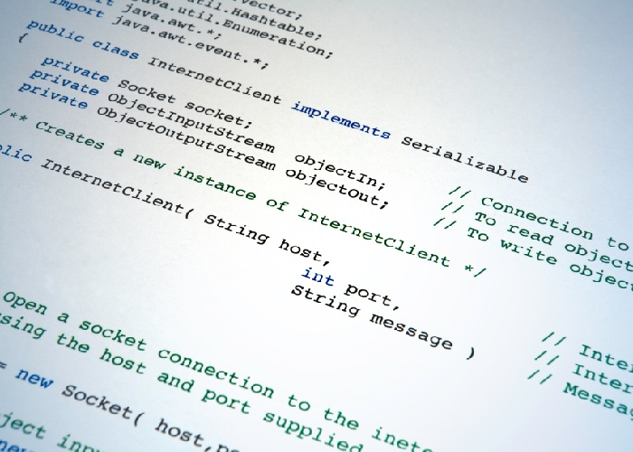

Projetos de Programação Computacional
Os projetos de Programação Computacional envolvem a criação de softwares que podem atuar nas mais diversas áreas, variando desde um simples jogo da velha até os mais complexos aplicativos que integram o posicionamento do usuário com eventos acontecendo a sua volta. Os projetos de Computação são relativamente recentes, porém tendem a ganhar cada vez mais espaço no cenário mundial.